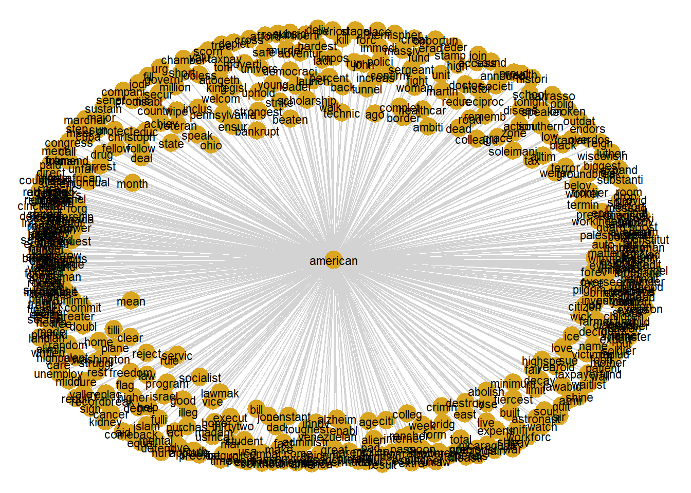
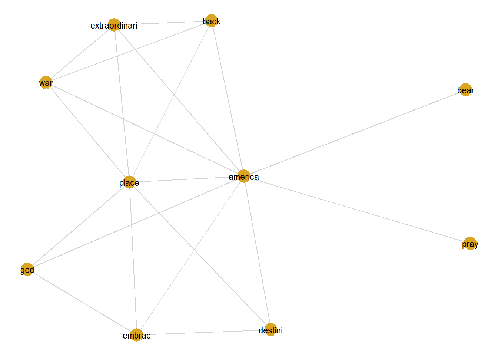
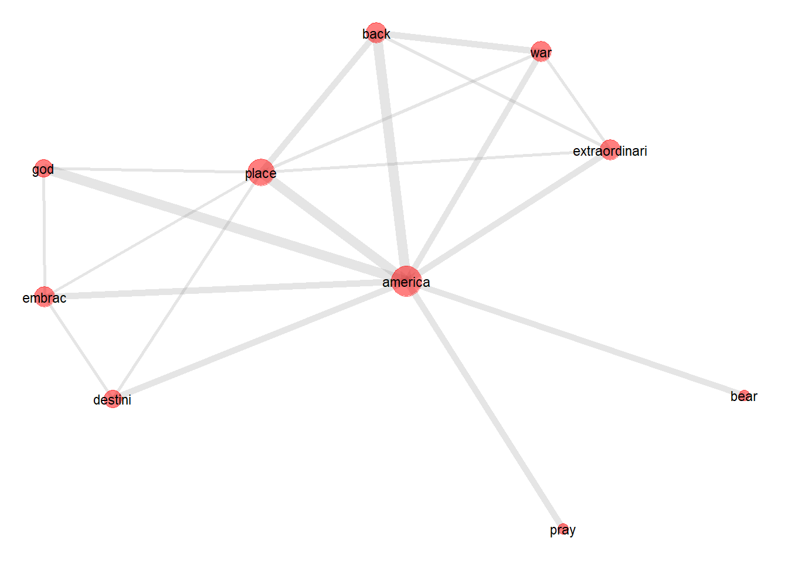

Analyzing co-occurrences and collocations using R
Martin Schweinberger
2020-04-15

1 Introduction
This tutorial introduces collocation and co-occurrence analysis with R and shows how to extract and visualize semantic links between words. Parts of this tutorial build on Wiedemann and Niekler (2017). The code for this stutorial can be downloaded here.
How would you find words that are associated with a specific term and how can you visualize such word nets? This tutorial addresses this issue by focusing on co-occurrence and collocations of words. Collocations are words that occur very frequently together. For example, Merry Christmas is a collocation because merry and Christmas occur more frequently together than would be expected by chance. This means that if you were to shuffle all words in a corpus and would then test the frequency of how often merry and Christmas co-occurred, they would occur significantly less often in the shuffled or randomized corpus than in a corpus that contain non-shuffled natural speech.
But how can you determine if words occur more frequently together than would be expected by chance? This tutorial will answer this question.
Preparation and session set up
As all calculations and visualizations in this tutorial rely on R, it is necessary to install R and RStudio. If these programs (or, in the case of R, environments) are not already installed on your machine, please search for them in your favorite search engine and add the term download. Open any of the first few links and follow the installation instructions (they are easy to follow, do not require any specifications, and are pretty much self-explanatory).
In addition, certain packages need to be installed so that the scripts shown below are executed without errors. Before turning to the code below, please install the packages by running the code below this paragraph. If you have already installed the packages mentioned below, then you can skip ahead ignore this section. To install the necessary packages, simply run the following code - it may take some time (between 1 and 5 minutes to install all of the packages so you do not need to worry if it takes some time).
# clean current workspace
rm(list=ls(all=T))
# set options
options(stringsAsFactors = F)
options(scipen = 999)
options(max.print=10000)
# install packages
install.packages("corpus", "dplyr", "quanteda", "stringr", "tidyr", "tm")
# for visualization
install.packages("GGally", "network", "sna", "ggplot2")
# for statistics
install.packages("collostructions")Once you have installed R and R-Studio, and have also initiated the session by executing the code shown above, you are good to go.
2 Visualizing Collocations of America in Trump’s 2020 SOTU Address
In the following example, we will analyze which words collocate with the term america in Trump’s 2020 State of the Union address. The analysis consists of the following steps:
Data processing
Creating a co-occurence matrix
Finding significant collocations
Extracting the network of collocations
Visualizing the network of collocations
2.1 Data processing
We start by initiating the session and loading the packages from the R library that we are going to use in this tutorial.
# clean current workspace
rm(list=ls(all=T))
# set options
options(stringsAsFactors = F)
options(scipen = 999)
options(max.print=10000)
# load packages
# for data porcessing
library(corpus)
library(dplyr)
library(quanteda)
library(stringr)
library(tidyr)
library(tm)
# for visualization
library(GGally)
library(network)
library(sna)
library(ggplot2)We continue the analysis by loading the data and defining the key term. The key term forms the center of the collocation network.
# load data
textdata <- readLines("https://SLCLADAL.github.io/data/sotutrump.txt",
skipNul = T, encoding = "unknown")
# define collocterm
collocterm <- "america"
# inspect data
str(textdata)## chr [1:257] "THE PRESIDENT: Thank you very much. Thank you. Thank you very much." ...The separation of the text into semantic analysis units is important for co-occurrence analysis. Context windows can be for instance documents, paragraphs or sentences or neighboring words. One of the most frequently used context window is the sentence. The sentence segmentation must take place before the other preprocessing steps because the sentence-segmentation-model relies on intact word forms and punctuation marks.
# clean data
textdata <- textdata %>%
stringr::str_replace_all("AUDIENCE:.*", "") %>%
stringr::str_replace_all(" {2,}", " ") %>%
stringr::str_replace_all("THE PRESIDENT:", "") %>%
stringr::str_replace_all("Mr.", "Mr") %>%
stringr::str_replace_all("\\(applause.{0,1}\\)", "") %>%
stringr::str_replace_all("\\(APPLAUSE.{0,1}\\)", "") %>%
paste(collapse = " ") %>%
str_squish() %>%
stripWhitespace()
# split text into sentences
sentences <- unlist(strsplit(as.character(textdata), "(?<=\\.)\\s(?=[A-Z])", perl = T))
# inspect data
head(sentences)## [1] "Thank you very much."
## [2] "Thank you."
## [3] "Thank you very much."
## [4] "Madam Speaker, Mr Vice President, members of Congress, the First Lady of the United States — — and my fellow citizens: Three years ago, we launched the great American comeback."
## [5] "Tonight, I stand before you to share the incredible results."
## [6] "Jobs are booming, incomes are soaring, poverty is plummeting, crime is falling, confidence is surging, and our country is thriving and highly respected again. (Applause.) America’s enemies are on the run, America’s fortunes are on the rise, and America’s future is blazing bright."A word of warning is in order here: the newly decomposed corpus has now reached a considerable size of 268 sentences. Older computers may get in trouble because of insufficient memory during this preprocessing step.
Now we going to implement a pre-processing chain and apply it on the separated sentences. Preprocessing consists of cleaning the data by removing punctuation, numbers, superfluous white spaces, and so-called stop words which do not have semantic meaning.
# convert to lower case
sentencesclean <- sentences %>%
tolower() %>%
# remove punctuation
removePunctuation() %>%
# remove non alphanumeric characters
stringr::str_replace_all("[^[:alnum:][:space:]_]", "") %>%
# remove numbers
removeNumbers()
# remove stop words
english_stopwords <- readLines("https://slcladal.github.io/resources/stopwords_en.txt", encoding = "UTF-8")
sentencesclean <- removeWords(sentencesclean, english_stopwords) %>%
# strip white spaces
str_squish() %>%
stripWhitespace()
# remove emplty elements
sentencesclean <- sentencesclean[sentencesclean != ""]
# stem words
sentencesclean <- as.vector(sapply(sentencesclean, function(x){
x <- text_tokens(x, stemmer = "en")
x <- as.vector(unlist(x))
x <- stringr::str_c(x, sep = " ", collapse = " ")}))
# select a sample
#sentencesclean <- sample(sentencesclean, 100)
# inspect data
head(sentencesclean)## [1] "madam speaker mr vice presid member congress ladi unit state fellow citizen year ago launch great american comeback"
## [2] "tonight stand share incred result"
## [3] "job boom incom soar poverti plummet crime fall confid surg countri thrive high respect applaus america enemi run america fortun rise america futur blaze bright"
## [4] "year econom decay applaus day countri advantag scorn nation long applaus broken promis jobless recoveri tire platitud constant excus deplet american wealth power prestig"
## [5] "short year shatter mental american declin reject downsiz america destini"
## [6] "total reject downsiz"2.2 Creating a co-occurrence matrix
In a next step, we create a co-occurence matrix from the words in the sentences.
sentencecorpus <- Corpus(VectorSource(sentencesclean))
DTM <- DocumentTermMatrix(sentencecorpus, control=list(bounds = list(global=c(1, Inf)), weighting = weightBin))
# Convert to sparseMatrix matrix
require(Matrix)
DTM <- sparseMatrix(i = DTM$i,
j = DTM$j,
x = DTM$v,
dims = c(DTM$nrow, DTM$ncol),
dimnames = dimnames(DTM))
# Matrix multiplication for co-occurrence counts
coocCounts <- t(DTM) %*% DTM
cooc <- as.matrix(coocCounts)
cooc[1:5, 1:5]## ago american citizen comeback congress
## ago 12 2 1 1 2
## american 2 45 2 1 8
## citizen 1 2 8 1 2
## comeback 1 1 1 1 1
## congress 2 8 2 1 12The matrix has nrow(cooc) rows and columns and is symmetric. Each cell contains the number of joint occurrences. In the diagonal, the frequencies of single occurrences of each term are encoded.
The part of the co-occurrence matrix that is displayed shows that comeback appears together 1 times with congress in the 1222 sentences of the SUTO addresses. comeback alone occurs 1 times.
We can also use this co-occurrence table to create a co-occurence graph.
simplecooctb <- cooc[rownames(cooc) == "american",]
simplecoocdf <- data.frame(rep("american", length(simplecooctb)),
names(simplecooctb),
simplecooctb)
colnames(simplecoocdf) <- c("Term", "Cooc", "Freq")
# inspect results
head(simplecoocdf)## Term Cooc Freq
## ago american ago 2
## american american american 45
## citizen american citizen 2
## comeback american comeback 1
## congress american congress 8
## fellow american fellow 2simplecooc <- simplecoocdf %>%
dplyr::select(Term, Cooc, Freq)
simplecoocterms <- rep(simplecooc$Term, simplecooc$Freq)
simplecooccoocs <- rep(simplecooc$Cooc, simplecooc$Freq)
simplecoocdf <- data.frame(simplecoocterms, simplecooccoocs)
colnames(simplecoocdf) <- c("Term", "CoocTerm")
simplecoocnet <- network(simplecoocdf,
directed = FALSE,
ignore.eval = FALSE,
names.eval = "weights"
)
ggnet2(simplecoocnet,
size = 6,
color = "goldenrod",
edge.size = .5,
edge.color = "lightgrey",
label = TRUE,
label.size = 3)
However, this network is not really useful as it does not distinguish between co-occurences and collocates, i.e. terms that occur significantly more frequently with the keyterm than would be expected by chance. Therefore, we now proceed to extract collocations.
2.3 Finding significant collocates
In order to identify which words occur together more frequently than would be expected by chance, we have to determine if their co-occurence frequency is statistical significant.
In a first step, we will determine which terms collocate significantly with the key term we are intersted in. In a second step, we will extract the network of collocations around this key term.
To determine which terms collocate significantly with the key term ("america), we will use multiple Fisher’s Exact tests which require the following information:
a = Number of times
coocTermoccurs with term jb = Number of times
coocTermoccurs without term jc = Number of times other terms occur with term j
d = Number of terms that are not
coocTermor term j
In a first step, we create a table which holds these quantities.
coocdf <- as.data.frame(as.matrix(cooc))
cooctb <- coocdf %>%
dplyr::mutate(Term = rownames(coocdf)) %>%
tidyr::gather(CoocTerm, TermCoocFreq,
colnames(coocdf)[1]:colnames(coocdf)[ncol(coocdf)]) %>%
dplyr::mutate(Term = factor(Term),
CoocTerm = factor(CoocTerm)) %>%
dplyr::mutate(AllFreq = sum(TermCoocFreq)) %>%
dplyr::group_by(Term) %>%
dplyr::mutate(TermFreq = sum(TermCoocFreq)) %>%
dplyr::ungroup(Term) %>%
dplyr::group_by(CoocTerm) %>%
dplyr::mutate(CoocFreq = sum(TermCoocFreq)) %>%
dplyr::arrange(Term) %>%
dplyr::mutate(a = TermCoocFreq,
b = TermFreq - a,
c = CoocFreq - a,
d = AllFreq - (a + b + c)) %>%
dplyr::mutate(NRows = nrow(coocdf))
cooctb## # A tibble: 1,493,284 x 11
## # Groups: CoocTerm [1,222]
## Term CoocTerm TermCoocFreq AllFreq TermFreq CoocFreq a b c d
## <fct> <fct> <dbl> <dbl> <dbl> <dbl> <dbl> <dbl> <dbl> <dbl>
## 1 aban~ ago 0 55525 15 262 0 15 262 55248
## 2 aban~ american 0 55525 15 891 0 15 891 54619
## 3 aban~ citizen 0 55525 15 118 0 15 118 55392
## 4 aban~ comeback 0 55525 15 17 0 15 17 55493
## 5 aban~ congress 0 55525 15 352 0 15 352 55158
## 6 aban~ fellow 0 55525 15 27 0 15 27 55483
## 7 aban~ great 0 55525 15 160 0 15 160 55350
## 8 aban~ ladi 0 55525 15 78 0 15 78 55432
## 9 aban~ launch 0 55525 15 79 0 15 79 55431
## 10 aban~ madam 0 55525 15 17 0 15 17 55493
## # ... with 1,493,274 more rows, and 1 more variable: NRows <int>We now select the term for which we want to check the collocation network. In this example, we want to analyze the network of collocterm. Thus, we remove all rows from the data that do not involve collocterm.
cooctb_redux <- cooctb %>%
dplyr::filter(Term == collocterm)Next, we calculate which terms are collocating with collocterm but we also test which terms are not used with collocterm.
coocStatz <- cooctb_redux %>%
dplyr::rowwise() %>%
dplyr::mutate(p = as.vector(unlist(fisher.test(matrix(c(a, b, c, d),
ncol = 2, byrow = T))[1]))) %>%
dplyr::mutate(x2 = as.vector(unlist(chisq.test(matrix(c(a, b, c, d), ncol = 2, byrow = T))[1]))) %>%
dplyr::mutate(phi = sqrt((x2/(a + b + c + d)))) %>%
dplyr::mutate(expected = as.vector(unlist(chisq.test(matrix(c(a, b, c, d), ncol = 2, byrow = T))$expected[1]))) %>%
dplyr::mutate(Significance = ifelse(p <= .05, "p<.05",
ifelse(p <= .01, "p<.01",
ifelse(p <= .001, "p<.001", "n.s."))))
# inspect results
coocStatz## Source: local data frame [1,222 x 16]
## Groups: <by row>
##
## # A tibble: 1,222 x 16
## Term CoocTerm TermCoocFreq AllFreq TermFreq CoocFreq a b c d
## <fct> <fct> <dbl> <dbl> <dbl> <dbl> <dbl> <dbl> <dbl> <dbl>
## 1 amer~ ago 2 55525 594 262 2 592 260 54671
## 2 amer~ american 10 55525 594 891 10 584 881 54050
## 3 amer~ citizen 3 55525 594 118 3 591 115 54816
## 4 amer~ comeback 0 55525 594 17 0 594 17 54914
## 5 amer~ congress 6 55525 594 352 6 588 346 54585
## 6 amer~ fellow 0 55525 594 27 0 594 27 54904
## 7 amer~ great 2 55525 594 160 2 592 158 54773
## 8 amer~ ladi 0 55525 594 78 0 594 78 54853
## 9 amer~ launch 1 55525 594 79 1 593 78 54853
## 10 amer~ madam 0 55525 594 17 0 594 17 54914
## # ... with 1,212 more rows, and 6 more variables: NRows <int>, p <dbl>,
## # x2 <dbl>, phi <dbl>, expected <dbl>, Significance <chr>coocStatz <- coocStatz %>%
dplyr::ungroup() %>%
dplyr::arrange(p) %>%
dplyr::mutate(j = 1:n()) %>%
# perform benjamini-holm correction
dplyr::mutate(corr05 = ((j/NRows)*0.05)) %>%
dplyr::mutate(corr01 = ((j/NRows)*0.01)) %>%
dplyr::mutate(corr001 = ((j/NRows)*0.001)) %>%
# calculate corrected significance status
dplyr::mutate(CorrSignificance = ifelse(p <= corr001, "p<.001",
ifelse(p <= corr01, "p<.01",
ifelse(p <= corr05, "p<.05", "n.s.")))) %>%
dplyr::mutate(p = round(p, 6)) %>%
dplyr::mutate(x2 = round(x2, 1)) %>%
dplyr::mutate(phi = round(phi, 2)) %>%
dplyr::arrange(p) %>%
dplyr::select(-a, -b, -c, -d, -j, -NRows, -corr05, -corr01, -corr001) %>%
dplyr::mutate(Type = ifelse(expected > TermCoocFreq, "Antitype", "Type"))
# inspect results
coocStatz## # A tibble: 1,222 x 13
## Term CoocTerm TermCoocFreq AllFreq TermFreq CoocFreq p x2 phi
## <fct> <fct> <dbl> <dbl> <dbl> <dbl> <dbl> <dbl> <dbl>
## 1 amer~ america 30 55525 594 594 0 86.1 0.04
## 2 amer~ god 4 55525 594 93 0.0179 6.4 0.01
## 3 amer~ bear 2 55525 594 21 0.0210 7.3 0.01
## 4 amer~ war 3 55525 594 55 0.0212 6.3 0.01
## 5 amer~ destini 2 55525 594 23 0.0249 6.5 0.01
## 6 amer~ pray 2 55525 594 23 0.0249 6.5 0.01
## 7 amer~ place 4 55525 594 106 0.0274 5 0.01
## 8 amer~ embrac 2 55525 594 25 0.0291 5.7 0.01
## 9 amer~ extraor~ 3 55525 594 65 0.0326 4.7 0.01
## 10 amer~ back 5 55525 594 182 0.0468 3.4 0.01
## # ... with 1,212 more rows, and 4 more variables: expected <dbl>,
## # Significance <chr>, CorrSignificance <chr>, Type <chr>2.4 Extracting a collocation network
Now that we have determined which words collocate with the key term (collocterm), we extract the collocation network.
colloctermtb <- cooctb %>%
dplyr::filter(Term == collocterm,
TermCoocFreq > 0)
colloctermtb## # A tibble: 388 x 11
## # Groups: CoocTerm [388]
## Term CoocTerm TermCoocFreq AllFreq TermFreq CoocFreq a b c d
## <fct> <fct> <dbl> <dbl> <dbl> <dbl> <dbl> <dbl> <dbl> <dbl>
## 1 amer~ ago 2 55525 594 262 2 592 260 54671
## 2 amer~ american 10 55525 594 891 10 584 881 54050
## 3 amer~ citizen 3 55525 594 118 3 591 115 54816
## 4 amer~ congress 6 55525 594 352 6 588 346 54585
## 5 amer~ great 2 55525 594 160 2 592 158 54773
## 6 amer~ launch 1 55525 594 79 1 593 78 54853
## 7 amer~ member 2 55525 594 145 2 592 143 54788
## 8 amer~ presid 2 55525 594 125 2 592 123 54808
## 9 amer~ state 5 55525 594 442 5 589 437 54494
## 10 amer~ unit 4 55525 594 349 4 590 345 54586
## # ... with 378 more rows, and 1 more variable: NRows <int>2.5 Extracting collocations
We now extract terms that collocate with the key term (collocterm).
coocStatz_redux <- coocStatz %>%
dplyr::filter(Significance != "n.s.")
coocStatz_redux ## # A tibble: 10 x 13
## Term CoocTerm TermCoocFreq AllFreq TermFreq CoocFreq p x2 phi
## <fct> <fct> <dbl> <dbl> <dbl> <dbl> <dbl> <dbl> <dbl>
## 1 amer~ america 30 55525 594 594 0 86.1 0.04
## 2 amer~ god 4 55525 594 93 0.0179 6.4 0.01
## 3 amer~ bear 2 55525 594 21 0.0210 7.3 0.01
## 4 amer~ war 3 55525 594 55 0.0212 6.3 0.01
## 5 amer~ destini 2 55525 594 23 0.0249 6.5 0.01
## 6 amer~ pray 2 55525 594 23 0.0249 6.5 0.01
## 7 amer~ place 4 55525 594 106 0.0274 5 0.01
## 8 amer~ embrac 2 55525 594 25 0.0291 5.7 0.01
## 9 amer~ extraor~ 3 55525 594 65 0.0326 4.7 0.01
## 10 amer~ back 5 55525 594 182 0.0468 3.4 0.01
## # ... with 4 more variables: expected <dbl>, Significance <chr>,
## # CorrSignificance <chr>, Type <chr>coocnet <- cooc[which(rownames(cooc) %in% coocStatz_redux$CoocTerm), which(colnames(cooc) %in% coocStatz_redux$CoocTerm)]
coocnet[1:5, 1:5]## america destini back extraordinari place
## america 30 2 5 3 4
## destini 2 3 0 0 1
## back 5 0 9 1 2
## extraordinari 3 0 1 3 1
## place 4 1 2 1 62.6 Visualizing the collocation network
Now, we can visualize the collocation network of the key term. In a first step, we create a network object.
collocnet = network(coocnet,
directed = FALSE,
ignore.eval = FALSE,
names.eval = "weights"
)Now, we create a simple network of the collocations.
ggnet2(collocnet,
size = 6,
color = "goldenrod",
edge.size = .5,
edge.color = "lightgrey",
label = TRUE,
label.size = 3)
The network only shows the collocates (as nodes) and which of these terms collocate. In a next step, we add information to the graph to show the collocation strength. In order to add information, we inspect the data that is underlying the simple network graph.
ggnet2(collocnet)$data## label alpha color shape size x y
## 1 america 1 grey75 19 9 0.43790844 0.5002818
## 2 destini 1 grey75 19 9 0.89974715 0.4573185
## 3 back 1 grey75 19 9 0.01646705 0.8668169
## 4 extraordinari 1 grey75 19 9 0.14521774 1.0000000
## 5 place 1 grey75 19 9 0.55264614 0.8882082
## 6 war 1 grey75 19 9 0.00000000 0.6930952
## 7 pray 1 grey75 19 9 0.01764997 0.1054978
## 8 god 1 grey75 19 9 0.95862609 0.8704725
## 9 bear 1 grey75 19 9 0.64763441 0.0000000
## 10 embrac 1 grey75 19 9 1.00000000 0.6490009Next, we modify the size of the icicles which should represent the frequency of the co-occurrence.
# rescale edge size
set.edge.attribute(collocnet, "weights", ifelse(collocnet %e% "weights" <= 1,
1,
ifelse(collocnet %e% "weights" <= 3, 2, 3)))
# define line type
set.edge.attribute(collocnet, "lty", ifelse(collocnet %e% "weights" == 0.25, 3,
ifelse(collocnet %e% "weights" == .5, 2, 1)))Now that we have set specified the edge size, and line type we visualize the network again.
ggnet2(collocnet,
label = TRUE,
color = "red",
label.size = 3,
alpha = .5,
size = "degree",
edge.size = "weights",
edge.lty = "lty",
edge.alpha = .2,
legend.position = "bottom") +
guides(color = FALSE, size = FALSE)
We now have a meaningful collocation network. All of the terms that are shown collocates with collocterm and the thickness of the lines shows how often the key term (collocterm) co-occurs with each of the terms. The size of the icicles shows how frequent the terms are.
3 Analyzing Changes in Collocation Strength across Time
This section focuses on changes in collocation strength across apparent time. The example focuses on adjective amplification in Australian English. The issue we will analyse here is whether we can unearth changes in the collocation pattern of adjective amplifiers such as very, really, or so. In other words, we will investigate if amplifiers associate with different adjectives among speakers from different age groups.
In a first step, we activate packages and load the data.
# load packages
library(Rling)
library(dplyr)
library(ggplot2)
# load functions
source("https://SLCLADAL.github.io/rscripts/collexcovar.R")
# load data
ampaus <- read.table("https://SLCLADAL.github.io/data/ampaus.txt", sep = "\t", header = T)
# inspect data
str(ampaus)## 'data.frame': 582 obs. of 3 variables:
## $ Adjective: chr "good" "good" "good" "other" ...
## $ Variant : chr "really" "other" "other" "pretty" ...
## $ Age : chr "26-40" "26-40" "26-40" "26-40" ...The data consists of three variables (Adjective, Variant, and Age).
Now, we perform a co-varying collexeme analysis for really versus other amplifiers. The function takes a data set consisting of three columns labelled keys, colls, and time
# rename data
ampaus <- ampaus %>%
dplyr::rename(keys = Variant, colls = Adjective, time = Age)
# perform analysis
collexcovar_really <- collexcovar(data = ampaus, keyterm = "really")
# inspect results
collexcovar_really## # A tibble: 18 x 12
## time colls Freq_key Freq_other Freq_Colls p x2 phi expected
## <chr> <chr> <dbl> <dbl> <dbl> <dbl> <dbl> <dbl> <dbl>
## 1 17-25 other 83 144 227 3.50e-5 17.8 0.21 104.
## 2 17-25 good 53 31 84 5.21e-4 12.8 0.18 38.5
## 3 17-25 nice 22 17 39 1.79e-1 2 0.07 17.9
## 4 26-40 other 29 58 87 2.09e-1 2 0.13 32.4
## 5 41-80 bad 1 0 1 2.46e-1 3.1 0.23 0.246
## 6 41-80 hard 2 2 4 2.50e-1 1.5 0.16 0.982
## 7 26-40 bad 3 2 5 3.59e-1 1.2 0.1 1.86
## 8 26-40 hard 1 0 1 3.72e-1 1.7 0.12 0.372
## 9 17-25 funny 13 11 24 4.07e-1 0.7 0.04 11.0
## 10 41-80 other 7 26 33 5.44e-1 0.5 0.09 8.11
## 11 26-40 good 8 10 18 5.99e-1 0.5 0.06 6.69
## 12 17-25 bad 9 10 19 1.00e+0 0 0.01 8.70
## 13 17-25 hard 5 6 11 1.00e+0 0 0 5.04
## 14 26-40 funny 1 1 2 1.00e+0 0.1 0.03 0.744
## 15 26-40 nice 3 5 8 1.00e+0 0 0 2.98
## 16 41-80 funny 0 1 1 1.00e+0 0.3 0.08 0.246
## 17 41-80 good 4 12 16 1.00e+0 0 0.01 3.93
## 18 41-80 nice 0 2 2 1.00e+0 0.7 0.11 0.491
## # ... with 3 more variables: CorrSignificance <chr>, Type <chr>, Variant <chr># perform analysis
collexcovar_pretty <- collexcovar(data = ampaus, keyterm = "pretty")
collexcovar_so <- collexcovar(data = ampaus, keyterm = "so")
collexcovar_very <- collexcovar(data = ampaus, keyterm = "very")For other amplifiers, we have to change the label “other” to “bin” as the function already has a a label “other”. Once we have changed other to bin, we perform the analysis.
ampaus <- ampaus %>%
dplyr::mutate(keys = ifelse(keys == "other", "bin", keys))
collexcovar_other <- collexcovar(data = ampaus, keyterm = "bin")Next, we combine the results of the co-varying collexeme analysis into a single table.
# combine tables
collexcovar_ampaus <- rbind(collexcovar_really, collexcovar_very,
collexcovar_so, collexcovar_pretty, collexcovar_other)
collexcovar_ampaus <- collexcovar_ampaus %>%
dplyr::rename(Age = time,
Adjective = colls) %>%
dplyr::mutate(Variant = ifelse(Variant == "bin", "other", Variant)) %>%
dplyr::arrange(Age)
# inspect results
collexcovar_ampaus## # A tibble: 90 x 12
## Age Adjective Freq_key Freq_other Freq_Colls p x2 phi expected
## <chr> <chr> <dbl> <dbl> <dbl> <dbl> <dbl> <dbl> <dbl>
## 1 17-25 other 83 144 227 3.50e-5 17.8 0.21 104.
## 2 17-25 good 53 31 84 5.21e-4 12.8 0.18 38.5
## 3 17-25 nice 22 17 39 1.79e-1 2 0.07 17.9
## 4 17-25 funny 13 11 24 4.07e-1 0.7 0.04 11.0
## 5 17-25 bad 9 10 19 1.00e+0 0 0.01 8.70
## 6 17-25 hard 5 6 11 1.00e+0 0 0 5.04
## 7 17-25 funny 0 24 24 3.43e-2 4.5 0.1 3.56
## 8 17-25 other 40 187 227 9.06e-2 3.1 0.09 33.7
## 9 17-25 bad 0 19 19 9.09e-2 3.5 0.09 2.82
## 10 17-25 hard 3 8 11 2.15e-1 1.4 0.06 1.63
## # ... with 80 more rows, and 3 more variables: CorrSignificance <chr>,
## # Type <chr>, Variant <chr>We now modify the data set so that we can plot the collocation strength across apparent time.
ampauscoll <- collexcovar_ampaus %>%
dplyr::select(Age, Adjective, Variant, Type, phi) %>%
dplyr::mutate(phi = ifelse(Type == "Antitype", -phi, phi)) %>%
dplyr::select(-Type) %>%
tidyr::spread(Adjective, phi) %>%
tidyr::replace_na(list(bad = 0,
funny = 0,
hard = 0,
good = 0,
nice = 0,
other = 0)) %>%
tidyr::gather(Adjective, phi, bad:other) %>%
tidyr::spread(Variant, phi) %>%
tidyr::replace_na(list(pretty = 0,
really = 0,
so = 0,
very = 0,
other = 0)) %>%
tidyr::gather(Variant, phi, other:very)
ampauscoll## # A tibble: 90 x 4
## Age Adjective Variant phi
## <chr> <chr> <chr> <dbl>
## 1 17-25 bad other -0.05
## 2 17-25 funny other -0.05
## 3 17-25 good other -0.05
## 4 17-25 hard other 0.04
## 5 17-25 nice other -0.07
## 6 17-25 other other 0.12
## 7 26-40 bad other 0.02
## 8 26-40 funny other -0.06
## 9 26-40 good other 0.01
## 10 26-40 hard other -0.04
## # ... with 80 more rowsIn a final step, we visualize the results of our analysis.
ggplot(ampauscoll, aes(x = reorder(Age, desc(Age)),
y = phi, group = Variant,
color = Variant, linetype = Variant)) +
facet_wrap(vars(Adjective)) +
geom_line() +
guides(color=guide_legend(override.aes=list(fill=NA))) +
scale_color_manual(values =
c("gray70", "gray70", "gray20", "gray70", "gray20"),
name="Variant",
breaks = c("other", "pretty", "really", "so", "very"),
labels = c("other", "pretty", "really", "so", "very")) +
scale_linetype_manual(values =
c("dotted", "dotdash", "longdash", "dashed", "solid"),
name="Variant",
breaks = c("other", "pretty", "really", "so", "very"),
labels = c("other", "pretty", "really", "so", "very")) +
theme_set(theme_bw(base_size = 12)) +
theme(legend.position="top",
axis.text.x = element_text(size=12),
panel.grid.major = element_blank(),
panel.grid.minor = element_blank()) +
coord_cartesian(ylim = c(-.2, .4)) +
labs(x = "Age", y = "Collocation Strength") +
guides(size = FALSE)+
guides(alpha = FALSE)
The results show that the collocation strength of different amplifier variants changes quite notably across age groups and we can also see that there is considerable variability in the way that the collocation strengths changes. For example, the collocation strengths between bad and really decreases from old to young speakers, while the reverse trend emerges for good which means that really is collocating more strongly with good among younger speakers than it is among older speakers.
4 Collostructional Analysis
Collostructional analysis (Stefanowitsch and Gries 2003, 2005) investigates the lexicogrammatical associations between constructions and lexical elements and there exist three basic subtypes of collostructional analysis:
Simple Collexeme Analysis
Distinctive Collexeme Analysis
Co-Varying Collexeme Analysis
The analyses performed here are based on the collostructions package (Flach 2017).
4.1 Simple Collexeme Analysis
Simple Collexeme Analysis determines if a word is significantly attracted to a specific construction within a corpus. The idea is that the frequency of the word that is attracted to a construction is significantly higher within the construction than would be expected by chance.
The example here analyzses the Go + Verb construction (e.g. “Go suck a nut!”). The question is which verbs are attracted to this constructions (in this case, if suck is attracted to this construction).
In a first step, we load the collostructions package and inspect the data. In this case, we will only use a sample of 100 rows from the data set as the output would become hard to read.
# load library
library(collostructions)
# draw a sample of the data
goVerb <- goVerb[sample(nrow(goVerb), 100),]
# inspect data
str(goVerb)## 'data.frame': 100 obs. of 3 variables:
## $ WORD : Factor w/ 752 levels "accept","accomplish",..: 596 458 567 49 36 693 334 592 376 58 ...
## $ CXN.FREQ : int 1 12 1 1 3 10 1 9 1 1 ...
## $ CORP.FREQ: int 380 34842 11565 34970 6322 38282 295 16297 1011 3753 ...The collex function which calculates the results of a simple collexeme analysis requires a data frame consisting out of three columns that contain in column 1 the word to be tested, in column 2 the frequency of the word in the construction (CXN.FREQ), and in column 3 the frequency of the word in the corpus (CORP.FREQ).
To perform the simple collexeme analysis, we need the overal size of the corpus, the frequency with which a word occurs in the construction under investigation and the frequency of that construction.
# define corpus size
crpsiz <- sum(goVerb$CORP.FREQ)
# perform simple collexeme analysis
scollex_results <- collex(goVerb, corpsize = crpsiz, am = "logl",
reverse = FALSE, decimals = 5,
threshold = 1, cxn.freq = NULL,
str.dir = FALSE)
# inspect results
head(scollex_results)## COLLEX CORP.FREQ OBS EXP ASSOC COLL.STR.LOGL SIGNIF
## 1 fuck 7236 140 1.9 attr 941.14129 *****
## 2 visit 77696 234 20.9 attr 748.00636 *****
## 3 talk 100009 189 26.9 attr 437.72210 *****
## 4 grab 10759 76 2.9 attr 355.86476 *****
## 5 sit 35886 109 9.6 attr 339.03691 *****
## 6 wash 10714 22 2.9 attr 51.57311 *****The results show which words are significantly attracted to the construction. If the ASSOC column did not show attr, then the word would be repelled by the construction.
4.2 Covarying Collexeme Analysis
Covarying collexeme analysis determines if the occurrence of a word in the first slot of a constructions affects the occurrence of another word in the second slot of the construction. As such, covarying collexeme analysis analyzes constructions with two slots and how the lexical elemenst within the two slots affect each other.
The data we will use consists of two columns which contain in the first column (CXN.TYPE) the word in the first slot (either cannot or can’t) and in the second slot (COLLEXEME) the word in the second slot, i.e. the collexeme, which the verb that follows after cannot or can’t. The first six rows of the data are shown below.
head(cannot)## CXN.TYPE COLLEXEME
## 1 cannot see
## 2 can't figure
## 3 can't do
## 4 cannot deal
## 5 cannot bring
## 6 cannot beWe now perform the collexeme analysis and oinspect the results.
covar_results <- collex.covar(cannot)
# inspect results
head(covar_results)## SLOT1 SLOT2 fS1 fS2 OBS EXP ASSOC COLL.STR.LOGL SIGNIF
## 1 cannot be 614 359 234 86.7 attr 328.47123 *****
## 2 can't remember 1929 127 127 96.3 attr 72.29136 *****
## 3 can't do 1929 184 170 139.6 attr 36.83365 *****
## 4 can't get 1929 132 123 100.1 attr 29.02213 *****
## 5 can't see 1929 125 115 94.8 attr 23.20114 *****
## 6 can't hear 1929 34 34 25.8 attr 18.93751 ****The results show if a words in the first and second slot attract or repel each other (ASSOC) and provide uncorrceted significance levels.
4.3 Distinctive Collexeme Analysis
Distinctive Collexeme Analysis determines if the frequencies of items in two alternating constructions or under two conditions differ significantly. This analysis can be extended to analyze if the use of a word differs between two corpora.
Again, we use the cannot data.
collexdist_results <- collex.dist(cannot, raw = TRUE)
# inspect results
head(collexdist_results)## COLLEX O.CXN1 E.CXN1 O.CXN2 E.CXN2 ASSOC COLL.STR.LOGL SIGNIF SHARED
## 1 remember 127 96.3 0 30.7 can't 72.29136 ***** N
## 2 do 170 139.6 14 44.4 can't 36.83365 ***** Y
## 3 get 123 100.1 9 31.9 can't 29.02213 ***** Y
## 4 see 115 94.8 10 30.2 can't 23.20114 ***** Y
## 5 hear 34 25.8 0 8.2 can't 18.93751 **** N
## 6 think 64 52.3 5 16.7 can't 14.00636 *** YThe results show if words are significantly attracted or repelled by either the contraction (can’t) or the full form (cannot). In this example, remember - like all other words shown in the results - is significantly attracted to the contraction (can’t).
How to cite this tutorial
Schweinberger, Martin. 2020. Analyzing co-occurrences and collocations using R. Brisbane: The University of Queensland. url: https://slcladal.github.io/collocations.html.
References
Flach, Susanne. 2017. “Collostructions: An R Implementation for the Family of Collostructional Methods.” Package version v.0.1.0. https://sfla.ch/collostructions/.
Stefanowitsch, Anatol, and Stefan Th. Gries. 2003. “Collostructions: Investigating the Interaction of Words and Constructions.” International Journal of Corpus Linguistics 8 (2): 209–43.
Stefanowitsch, Anatol, and Stefan Th Gries. 2005. “Covarying Collexemes.” Corpus Linguistics and Linguistic Theory 1 (1): 1–43.
Wiedemann, Gregor, and Andreas Niekler. 2017. “Hands-on: A Five Day Text Mining Course for Humanists and Social Scientists in R.” Berlin: Proceedings of the 1st Workshop Teaching NLP for Digital Humanities (Teach4DH@GSCL 2017). https://tm4ss.github.io/docs/index.html.